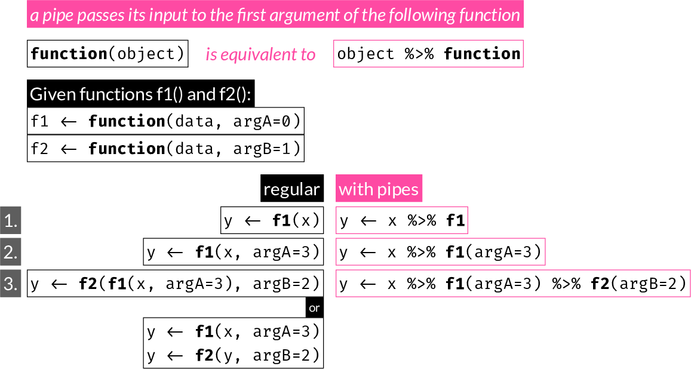

15 Functions
Writing functions is a core part of programming.
When should you write a function?
Whenever you find yourself repeating pieces of code.
Why is it important?
Writing functions helps reduce the total amount of code, which increases efficiency, reduces the chance of error, and can make code more readable.
Functions in R are “first-class objects”.
This means they can be stored inside other objects (e.g. a list), they can be passed as arguments to other functions and can be returned as output from functions.
For example, you can use a command like apply(mat, 2, mean)
Functions in R are for the most part like mathematical functions: they have one or more inputs and one output. The inputs are known as the function arguments. If you want to return multiple outputs, you can return a list containing any number of R objects.
User-defined functions are refered to as “closures” in R. A closure is made of a function and its environment. Closures are distinct from primitive functions, which are internally implemented.
15.1 Simple functions
Let’s start with a very simple function: single argument with no default value:
Define the function:
square <- function(x) {
x^2
}Try our new function:
square(3)[1] 9Notice above that x^2 is automatically returned by the function. It is the same as explicitly returning it with return():
square <- function(x) {
out <- x^2
return(out)
}
square(4)[1] 16which is the same as:
square <- function(x) {
out <- x^2
out
}
square(5)[1] 25A function returns either:
- an object passed to
return() - the value of the last expression within the function definition such as
outorx^2above.
return() is a way to end evaluation early:
square.pos <- function(x) {
if (x > 0) {
return(x^2)
} else {
x
}
cat("The input was left unchanged\n")
}
x <- sample(-10:10, 1)
x[1] 3square.pos(x)[1] 9Multiple arguments, with and without defaults:
raise <- function(x, power = 2) {
x^power
}
x <- sample(10, 1)
x[1] 7raise(x)[1] 49raise(x, power = 3)[1] 343raise(x, 3)[1] 34315.2 Argument matching
R will match unambiguous abbreviations of arguments:
fn <- function(alpha = 2, beta = 3, gamma = 4) {
alpha * beta + gamma
}
fn(g = 2)[1] 815.3 Arguments with prescribed set of allowed values
You can match specific values for an argument using match.arg():
myfn <- function(type = c("alpha", "beta", "gamma")) {
type <- match.arg(type)
cat("You have selected type '", type, "'\n", sep = "")
}
myfn("a")You have selected type 'alpha'myfn("b")You have selected type 'beta'myfn("g")You have selected type 'gamma'myfn("d")Error in match.arg(type): 'arg' should be one of "alpha", "beta", "gamma"Above you see that partial matching using match.arg() was able to identify a valid option, and when there was no match, an informative error was printed.
Partial matching is also automatically done on the argument names themselves, but it’s important to avoid depending on that.
adsr <- function(attack = 100,
decay = 250,
sustain = 40,
release = 1000) {
cat("Attack time:", attack, "ms\n",
"Decay time:", decay, "ms\n",
"Sustain level:", sustain, "\n",
"Release time:", release, "ms\n")
}
adsr(50, s = 100, r = 500)Attack time: 50 ms
Decay time: 250 ms
Sustain level: 100
Release time: 500 ms
15.4 Passing extra arguments to another function with the ... argument
Many functions include a ... argument at the end. Any arguments not otherwise matched are collected there. A common use for this is to pass them to another function:
cplot <- function(x, y,
cex = 1.5,
pch = 16,
col = "#18A3AC",
bty = "n", ...) {
plot(x, y, cex = cex, pch = pch, col = col, bty = bty, ...)
}... is also used for variable number of iputs, often as the first argument of a function. For example, look at the documentation of c, cat, cbind, rbind, paste
Note: Any arguments after the ..., must be named fully, i.e. will not be partially matched.
15.5 Return multiple objects
R function can only return a single object. This is not much of a problem because you can simply put any collection of objects into a list and return it:
lfn <- function(x, fn = square) {
xfn <- fn(x)
list(x = x,
xfn = xfn,
fn = fn)
}
lfn(3)$x
[1] 3
$xfn
[1] 9
$fn
function(x) {
out <- x^2
out
}
<bytecode: 0x118114cd8>15.6 Warnings and errors
You can use warning("some warning message") at any point inside a function to produce a warning message during execution. The message gets printed to the R console, but function execution is not stopped.
On the other hand, you can use stop("some error message") to print an error message to console and stop function execution.
The following function (el10) calculates:
\[ e^{log_{10}(x)} \]
which is not defined for negative x. In this case, we could let R give a warning when it tries to compute log10(x):
val1 <- el10(-3)Warning in el10(-3): NaNs producedWe could instead produce our own warning message:
Warning in el10(-3): x must be positiveWarning in el10(-3): NaNs producedval2[1] NaNAs you see, the output (NaN) still gets returned.
Alternatively, we can use stop() to end function execution:
Error in el10(-3): x must be positiveNote how, in this case, function evalutation is stopped and no value is returned.
15.7 Scoping
Functions exist in their own environment, i.e. contain their own variable definitions.
x <- 3
y <- 4
fn <- function(x, y) {
x <- 10*x
y <- 20*y
cat("Inside the function, x = ", x, " and y = ", y, "\n")
}
fn(x, y)Inside the function, x = 30 and y = 80 cat("Outside the function, x = ", x, " and y = ", y, "\n")Outside the function, x = 3 and y = 4 However, if a variable is referenced within a function but no local definition exists, the interpreter will look for the variable at the parent directory. It is best ensure all objects needed within a function are specified as arguments and passed appropriately when the function is called.
In the following example, x is only defined outside the function definition, but referenced within it.
x <- 21
itfn <- function(y, lr = 1) {
x + lr * y
}
itfn(3)[1] 2415.7.1 function vs. for loop
Let’s z-score the built-in mtcars dataset once with a for loop and once with a custom function. This links back to the example seen earlier in the for loop section. In practice, this would be performed with the scale() command:
Within the for loop, we are assigning columns directly to the object initialized before the loop. In the following example, we use print(environment()) to print the environment outside and inside the loop function to show that it is the same. This is purely for demonstration:
# initialize new object 'mtcars_z'
mtcars_z <- mtcars
cat("environment outside for loop is: ")environment outside for loop is: print(environment())<environment: R_GlobalEnv># z-score one column at a time in a for loop
for (i in 1:ncol(mtcars)) {
mtcars_z[, i] <- (mtcars[, i] - mean(mtcars[, i])) / sd(mtcars[, i])
cat("environment inside for loop is: ")
print(environment())
}environment inside for loop is: <environment: R_GlobalEnv>
environment inside for loop is: <environment: R_GlobalEnv>
environment inside for loop is: <environment: R_GlobalEnv>
environment inside for loop is: <environment: R_GlobalEnv>
environment inside for loop is: <environment: R_GlobalEnv>
environment inside for loop is: <environment: R_GlobalEnv>
environment inside for loop is: <environment: R_GlobalEnv>
environment inside for loop is: <environment: R_GlobalEnv>
environment inside for loop is: <environment: R_GlobalEnv>
environment inside for loop is: <environment: R_GlobalEnv>
environment inside for loop is: <environment: R_GlobalEnv>In contrast, all operations remain local within a function and the output must be returned:
ztransform <- function(x) {
cat("environment inside function body is: ")
print(environment())
z <- as.data.frame(sapply(mtcars, function(i) (i - mean(i))/sd(i)))
rownames(z) <- rownames(x)
z
}
mtcars_z2 <- ztransform(mtcars)environment inside function body is: <environment: 0x12a364a58>cat("environment outside function body is: ")environment outside function body is: print(environment())<environment: R_GlobalEnv>Notice how the environment outside and inside the loop function is the same, it is the Global environemnt, but the environment within the function is different. That is why any objects created or changed within a function must be returned if we want to make them available.
15.8 The pipe operator

A pipe operator was first introduced to R by the magrittr package with the %>% symbol. Note that a number of other packages that endorse the use of pipes export the pipe operator as well.
Starting with R version 4.1, a native pipe operator is included with the |> symbol.
A pipe allows writing f(x) as x |> f() (native pipe) or x %>% f (magrittr).
Note that the native pipe requires parentheses, but magrittr works with or without them.
A pipe is often used to:
- avoid multiple temporary assignments in a multistep procedure, or
- as an alternative to nesting functions.
Some packages and developers promote its use, others discourage it. You should try and see if/when it suits your needs.
The following:
x <- f1(x)
x <- f2(x)
x <- f3(x)is equivalent to:
x <- f3(f2(f1(x)))is equivalent to:
x <- x |> f1() |> f2() |> f3()$setosa
Sepal.Length Sepal.Width Petal.Length Petal.Width
5.006 3.428 1.462 0.246
$versicolor
Sepal.Length Sepal.Width Petal.Length Petal.Width
5.936 2.770 4.260 1.326
$virginica
Sepal.Length Sepal.Width Petal.Length Petal.Width
6.588 2.974 5.552 2.026 Pipes are used extensively in the tidyverse packages and many other third-party packages.
You can learn more about the magrittr pipe operator in the vignette
In RStudio the keyboard shortcut for the pipe operator is Shift-Command-M (MacOS) or Ctrl-Shift-M (Windows)
15.8.1 Differences between native pipe and magrittr
- native pipe requires
()after function name, magrittr works with or without them
x <- rnorm(300)x |> mean()[1] -0.01902987but this would fail:
x |> meanwhile either works in magrittr
x %>% mean[1] -0.01902987- native pipe by design only pipes its LHS to the first unnamed argument on the RHS. magrittr allows using a period
.to pipe to any position on the RHS. The native pipe workaround is using an anonymous function (can use the new shorter syntax\(x)instead offunction(x))
e.g.: Find the position of “r” in the latin alphabet
In this example, we want to pass the LHS to the second argument of grep().
Using native pipe, we name the first argument pattern and the LHS is passed to the first unnamed argument, i.e. the second (which is x, the character vector where matches are looked for)
letters |> grep(pattern = "r")[1] 18with magrittr you can use the dot notation to specify where to pipe into:
For demonstration, here’s the slightly involved way you would achieve this with an anonymous function and the native pipe. This may make sense for more complex calls.
letters |> {\(x) grep("r", x)}()[1] 18